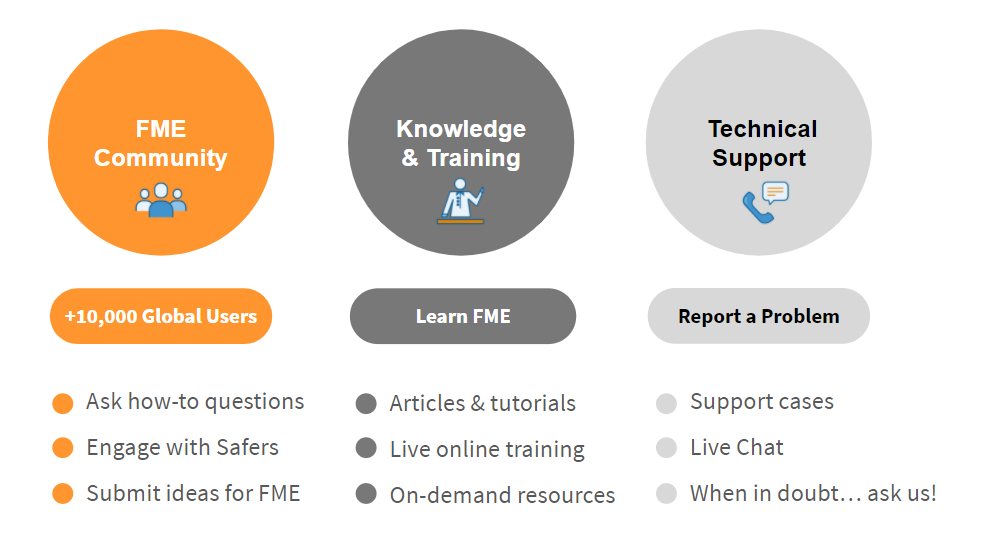

Learning Objectives
After completing this lesson, you’ll be able to:
- Explain what the FME Academy is and who it’s for.
- Explain the different FME Certifications.
- Understand how the FME Academy fits among our other learning resources.
Welcome to the FME Academy
Every journey starts with a single step—and so does every Learning Path. You’ve already taken the first step of your data integration learning journey by joining the FME Academy.
Whether you’re a new user, a seasoned data integration professional, or someone who loves to learn, there’s something in the FME Academy for you.
How Does It Work?
In the FME Academy, learning topics are organized into courses, which are broken up into lessons. To finish a lesson, you earn points by completing a quiz. A quiz checks your knowledge with multiple-choice questions. Once you’ve finished all of the lessons in a course, you get a shiny new badge for your profile.
Learning Paths are groups of courses that provide guided learning paths suited to specific roles or needs. You can also blaze your own Learning Path, and choose the courses that you’re most interested in without following a pre-existing Learning Path.
Let us be your Learning Path guide, and work through the rest of this course to learn the ins and outs of using the FME Academy.
Who is the FME Academy For?
The short answer is, well, everyone. We are working on content for every role and every level of experience. The FME Academy focuses on FME platform product functionality, plus some experiments in scenario-based training content. The next lesson has information on other FME learning resources.
FME Academy blends a variety of content types and approaches to cater to all types of learners, including:
- Videos
- Screenshots
- Images
- Tables and charts
- Step-by-step instructions
- Hands-on FME exercises
When we create content, we use a set of guiding principles that include:
- Practical examples and scenarios
- Storytelling
- Casual voice and tone
- Positivity
- Fun!
And did we mention fun? We want you—and everyone who uses the FME Academy—to have fun. We gamify our content so that you can learn new skills while you earn points and badges, and have something to show for it at the end.
What’s a Certification?
The FME Academy is a great place to learn new FME skills. Once you've acquired enough FME experience, you can apply for an FME certification. Being certified offers a number of benefits, including:
|

Grow Your Career
Gain recognition from your supervisors, peers, and clients for your expertise in data integration.
|

Path to Partnerships
Help your company partner with Safe Software, as FME Certification is a core requirement.
|

It’s Free!
Get FME Certified without paying any application or renewal fees; all we want is your expertise!
|
We offer three certifications:
- An FME Certified Professional demonstrates an understanding and expertise of the FME platform, with a focus on FME Desktop.
- An FME Server Certified Professional demonstrates an advanced level of expertise with FME Server. You must be an FME Certified Professional in order to apply for this certification.
- An FME Certified Trainer is a proficient teacher of FME who is capable of providing users with excellent training. You must be an employee of an official Safe Software Partner and a current FME Certified Professional in order to apply for this certification.
Becoming certified requires taking an exam and submitting examples of your work. While most people holding FME certifications work for Safe Software partners, applications are welcomed from anyone.
What Other Resources Are Available?
Safe Software and our partners offer a variety of learning resources.

FME Academy
The FME Academy is a new resource for self-serve FME learning. We recommend using the Academy to get onboarded with FME, to learn best practices and key skills, and to level up in the future as we publish more advanced content.
Live Online Training
We regularly offer complimentary live online training. We also record our live courses if you'd like to have an instructor walk you through exercises.
Partner Training
If your organization prefers in-person and/or customized training courses, you can get in touch with one of our many qualified partners.
Documentation
The FME platform comes with comprehensive documentation available in FME Desktop via the Help buttons. The documentation provides technical details about each transformer and data format. It is a great first resource when authoring a workspace, especially to learn how specific formats and transformers work.
Knowledge Base
If you prefer a step-by-step tutorial, our Knowledge Base contains tutorials and how-to guides on specific transformers and formats. Completing a tutorial on your favorite formats is a great way to quickly get up to speed.
Forums
The FME Community Forums is a great place to go for help with tricky problems after you've referred to the Documentation and Knowledge Base. By providing details about your problem and a sample workspace, you can make it easy for other Community members to help. Our nearly 14,000 Community members are able to solve data integration challenges together every day.
Ideas Exchange
As you work more with FME, you'll likely get ideas for features that could improve the platform. You can go to the FME Community Ideas page to suggest or vote on product improvements.
File a Support Case
If you encounter a bug or are unable to find help through any other channel, you can submit a support case. We recommend conducting some troubleshooting following this guide before filing a support case.
Where Do I Start?
First things first: To complete challenges, earn badges, and keep track of your progress, you need to log in to your account. If you are reading this right now, you’ve already succeeded, so now you’re ready to start learning and earning!
What’s a Quiz?
Learning is the bread and butter of the FME Academy, and one of the best ways to learn is by doing. Earning a badge is more than just reading through courses. You also have to complete a multiple-choice quiz at the end of each lesson. If you pass the first time, you are awarded the full points. Passing after that earns you fewer points on a sliding scale.
What’s Next?
You’ve logged in to the FME Academy and you’re ready to learn. You’re staring into a near-limitless expanse of learning opportunities, and it’s easy to be overwhelmed by the possibilities.
In the next lesson, you’ll learn how to navigate your way around and discover the content that’s right for you.